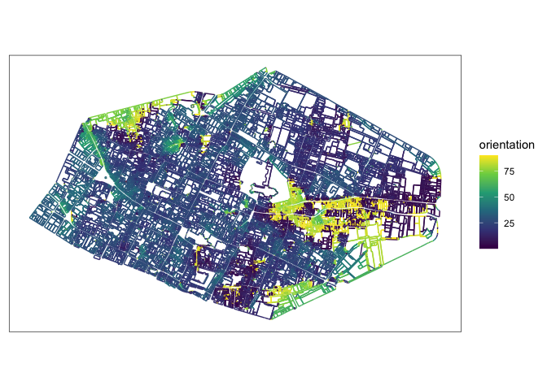
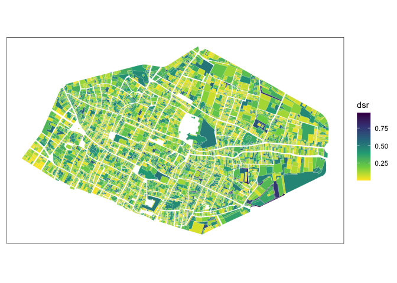
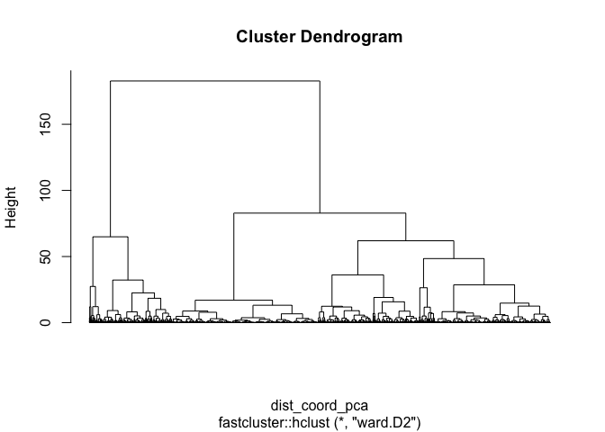
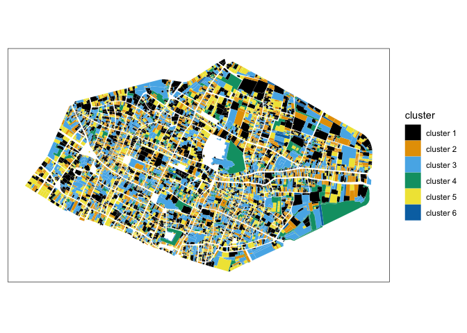

morphalr: Morphological Analysis for Archaeology
A package to compute morphological indices of spatial entities (e.g. parcels, buildings). It also provides visuals of multivariate statistics results (ACP and HCA).
Installing
Package currently exist as development on github.
Install package from github:
library(remotes)
install_github(repo = "JGravier/morphalr")Compute orientations from polygon
Load data of parcels of the city of Rouen in 1827 and extract segments (lines) from polygons.
library(tidyverse)
library(sf)
library(kableExtra)
library(morphalr)
# transform polygons as segments (lines)
linerouen <- morphalr_geom_to_segment(sfobject = rouen_1827, to = 'LINESTRING')morphal_geom_to_segment() can be applied on LINESTRING, e.g. in the case of streets modeled as lines.
Compute orientations of segments with East looking and perpendicular parameters.
orientationsest <- morphalr_segment_orientation(sfsegments = linerouen, looking = 'E', perpendicular = TRUE)
orientationsest |>
ggplot() +
geom_sf(aes(color = orientation)) +
scale_color_viridis_c() +
theme_bw() +
theme(axis.ticks = element_blank(), axis.text = element_blank(), panel.grid = element_blank())
Compute morphological indices
Example with distance to minimal bounding rectangle (DSR):
rouen_1827 |>
morphalr_dsr() |>
ggplot() +
geom_sf(aes(fill = dsr), color = 'grey90', linewidth = 0.05) +
scale_fill_viridis_c(direction = -1) +
theme_bw() +
theme(axis.ticks = element_blank(), axis.text = element_blank(), panel.grid = element_blank())
Computing clusters from indices
Compute indices.
rouen_with_indices <- rouen_1827 |>
morphalr_circularity() |>
morphalr_dsc() |>
morphalr_dsr()
rouen_with_indices <- rouen_with_indices[,2:5] # without rowid
rouen_with_indices## Simple feature collection with 10240 features and 3 fields
## Geometry type: POLYGON
## Dimension: XY
## Bounding box: xmin: 560973.9 ymin: 6927999 xmax: 563141.3 ymax: 6929327
## Projected CRS: RGF93 v1 / Lambert-93
## # A tibble: 10,240 × 4
## geometry miller_index dsc dsr
## <POLYGON [m]> <dbl> <dbl> <dbl>
## 1 ((561754.2 6928994, 561759.5 6928992, 561756.2… 0.690 0 0.174
## 2 ((561779.4 6929002, 561773.6 6928982, 561764.7… 0.689 -3.19e-12 0.0625
## 3 ((561732.2 6928970, 561735.3 6928967, 561741.4… 0.247 2.30e- 1 0.405
## 4 ((561715.6 6928974, 561708.7 6928977, 561705.1… 0.180 5.55e- 1 0.717
## 5 ((561605.9 6928902, 561603.4 6928896, 561592.8… 0.719 0 0.0265
## 6 ((561604.7 6928915, 561607.3 6928914, 561614 6… 0.490 3.56e- 3 0.0603
## 7 ((561610.9 6928904, 561611.7 6928904, 561610 6… 0.493 2.79e- 4 0.0623
## 8 ((561621 6928889, 561612.5 6928867, 561608.2 6… 0.441 1.20e- 2 0.0711
## 9 ((561627.2 6928869, 561623 6928871, 561619.3 6… 0.773 6.85e- 3 0.0271
## 10 ((561628.3 6928906, 561621.3 6928890, 561616.4… 0.680 2.91e- 2 0.122
## # ℹ 10,230 more rowsCreate clustering and plot result:
clusterrouen <- morphalr_clustering(sf = rouen_with_indices, pca_center = TRUE, pca_scale = TRUE, hca_method = 'ward.D2')
plot(clusterrouen, labels = FALSE, hang = 0) ### Clusters Cartography of clusters:
morphalr_clusters(sf = rouen_with_indices, clustering = clusterrouen, cutting = 6) |>
ggplot() +
geom_sf(aes(fill = cluster), color = 'white', linewidth = 0.02) +
ggthemes::scale_fill_colorblind() +
theme_bw() +
theme(axis.ticks = element_blank(), axis.text = element_blank(), panel.grid = element_blank())
Summary of clusters with mean of center-scale values of variables by cluster.
morphalr_clusters_mean(sf = rouen_with_indices, clustering = clusterrouen, cutting = 6)Morphological indices
| Function name | Indices | Implementation |
|---|---|---|
| morphalr_segment_orientation() | orientations of segments of polygons or lines | ✅ |
| morphalr_dsr() | distance of polygons to their minimal bounding rectangles | ✅ |
| morphalr_dsc() | distance of polygons to their convex hull | ✅ |
| morphalr_circularity() | Miller circularity index of polygons | ✅ |
| morphalr_complexity() | morphological complexity of polygons | ✅ |
| elongation (Schum) | 🔜 | |
| spreading (Morton) | 🔜 | |
| compacity (Thibault et al.) | 🔜 | |
| compactity 2 (Cauvin and Rimbert) | 🔜 | |
| compacity 3 (Gravelius) | 🔜 | |
| stretching | 🔜 | |
| area concavity | 🔜 | |
| inverse of perimeter concavity | 🔜 |